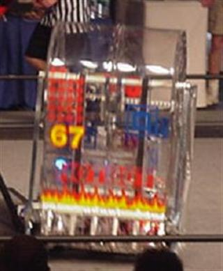

Click on the Image to See 2015 Video |
2015


Click on the Image to See 2015 Video |
Video: MSC Match 54 |
 is played by two competing Alliances of three robots
each on a flat 25’ x 54’ foot field, straddled by a truss suspended just
over five feet above the floor. The objective is to score as many balls
in goals as possible during a two-minute and 30-second match. The
more Alliances score their ball in their goals, and the more they work
together to do it, the more points their Alliance receives.
is played by two competing Alliances of three robots
each on a flat 25’ x 54’ foot field, straddled by a truss suspended just
over five feet above the floor. The objective is to score as many balls
in goals as possible during a two-minute and 30-second match. The
more Alliances score their ball in their goals, and the more they work
together to do it, the more points their Alliance receives. Video: CURIE Quarter Final 4 Match 2 |

Video: Northville district finals Match 2 |
Video: Curie Semifinals Match 2 |
Video: Einstein final Match |

Video: Einstein final Match |
Video: Einstein final Match 1 |
Video: Curie Semifinal 1 Match 2 |

Video: Galileo Match 49 |

Video: Einstein finals Match 2 |

Video: great Lakes Match 79 |

Video: Newton sf 2 Match 1 |
.jpg) |
Video: Newton sf1 match 1 |

Video: Motorola midwest regional |
|  |
Video: Motorola midwest regional
|

 |
Video: Philadelphia Alliance Regional |
Video: National Semifinals |
Video: CHICAGO REGIONAL Match 1 |